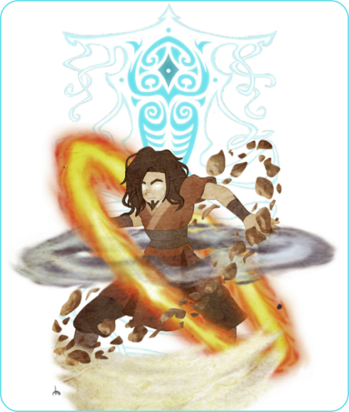

O que é Avatar?
Uma animação da Nickelodeon, com duas temporadas divididas em 3 e 4 “livros” (termo usado para representar as partes de cada temporada), criado em Fevereiro de 2005. Conta a história de um mundo em que existem pessoas que podem controlar um dos quatro elementos da natureza, Fogo, Ar, Água e Terra. Nesse mesmo mundo, a cada 100 anos nasce alguém com o poder de controlar todos os quatro elementos, pois é a reencarnação de um espírito antigo chamado “Raava”. Sempre focando no Avatar e em seu grupo de amigos, cada temporada mostra ele lidando com diversos vilões com motivações diferentes e objetivos diferentes.
Conta sobre o pequeno Aang, que em sua infância descobriu que era o Avatar, e com medo da responsabilidade acabou fugindo e de alguma forma se congelando por 100 anos, até ser encontrado por Sokka e Katara durante o ataque da Nação do Fogo.
Clique sobre algum dos ícones para conhecer os personagens, clique em algum outro lugar para voltar.
Aang
Aang é um jovem brincalhão de 112 anos, o último da cultura dos Monges do Ar. Descobriu que era o avatar durante a infância antes de realmente anunciarem, se assustando com a responsabilidade de ser a pessoa que defenderia o mundo e um grande poder político e fugindo de sua casa. Acabou por cair no mar e se afogar, mas seus poderes ocultos o prenderam em um grande pedaço de gelo, o adormecendo por 100 anos. Foi encontrado por duas pessoas da tribo da água, se soltando junto de seu mascote Appa e agora precisando fazer seu dever como Avatar para impedir que a Nação do Fogo dominasse todas as outras nações do mundo.
avatar
Sokka e Katara
Sokka e Katara são irmãos orfãos que tiveram seus pais mortos por um ataque da Nação do fogo. Katara é dominadora de água, mas Sokka não nasceu com tal habilidade. Os dois vivem sozinhos na Tribo da Água cuidando um do outro, principalmente Sokka que se ente responsável em cuidar de sua irmã. Ao encontrar Aang congelado, os dois se juntaram a ele para que pudessem o ajudar a enfrentar a grande Nação do Fogo.
água e sem dobra
terra

Toph
Toph é uma garota cega, filha da rica família Beifong e moradora da Nação da Terra. Por causa de sua deficiência, seus pais agem como super protetores, a sufocando sem saber ao não deixá-la fazer praticamente nada com medo de Toph se machucar. Quando criança, acabou por fugir certas vezes de casa para brincar sozinha, uma vez se perdendo e se encontrando com as Toupeiras Texugo, animais que a ensinaram a dominar a terra com maestria, se tornando a melhor lutadora em uma arena clandestina sem nem mesmo seus pais saberem. Se junta a Aang após convencerem seus pais a deixá-la viver.

fogo

Zuko
Zuko foi expulso de sua casa após desonrar seu pai, sendo desafiado pelo próprio em um “Agni kai” - um duelo entre dobradores de fogo - pelo próprio como castigo e tendo seu rosto queimado. Se obcecou pela ideia de capturar o Avatar para entregá-lo à Nação do Fogo e recuperar sua honra com o Senhor do Fogo Ozai, seu pai. Acabou se aliando a Aang com o decorrer do desenho ao refletir sobre seu objetivo.
Conta sobre Korra, que após se empolgar com a notícia de ser o Avatar, viajou para a Cidade República com os filhos do antigo Aang para aprender a dominar os elementos e aprender sua responsabilidade como Avatar.
Clique sobre algum dos ícones para conhecer os personagens, clique em algum outro lugar para voltar.
Korra
Korra, com poucos anos de seu nascimento descobriu por si só o poder de manipular todos os quatro elementos da natureza, se empolgando com a ideia de ser o Avatar. Logo quando criança, foi levada para treinar os elementos que tinha facilidade, Água, Fogo e Terra, masterizando todos com extrema facilidade, mas tendo dificuldade com a dobra de Ar. Com isso, Tenzin, filho do falecido Aang, último Avatar, sugeriu para que pudesse levá-la à ilha dos monges de ar próxima a Cidade República para que pudesse a ajudá-la a dominar o ar. Então, nessa mesma cidade, Korra descobriu amigos e inimigos, agora tendo que lidar com a enorme responsabilidade de ser o Avatar que ela não esperava.
avatar
Asami
Filha de Hiroshi Sato, vinda de família rica, se aventura na Cidade República enquanto ajuda seu pai a admnistrar sua empresa de tecnologia. Acabou se envolvendo sem querer com o Avatar e seu grupo, mas se provou ser uma aliada habilidosa após ajudar a derrotar Amon, o primeiro vilão que Korra enfrenta durante o desenho.
sem dobra
terra
Bolin
Um jogador de dominação profissional, faz time com seu irmão Mako e realmente gosta de ser famoso por ser um dos se não o melhor time da Cidade República. Acabou encontrando Korra perdida na arena de dobra profissional e a ajudou a conhecer a cidade, até mesmo a deixando substituir um membro que havia acabado de sair do time para a próxima roda. Durante a partida descobriu que Korra era o Avatar e acabaram ficando bem mais próximos após se envolverem com Amon.
fogo

Mako
Mako é o irmão de Bolin, um habilidoso dominador de fogo e profissional em dominação, sendo o melhor jogador do esporte conhecido na cidade. Após descobrir que Korra era o Avatar, ajudou ela a lidar com o problema do vilão Amon, mesmo não se interessando tanto em participar do grupo de começo. Cuida de seu irmão a série inteira e vai se tornando mais amigável com o tempo.
Aperte algum dos 4 botões para localizar todas as regiões no mapa.
Coloque o mouse sobre uma das regiões para conhecer um dos principais locais.
Tribo Norte
Uma das tribos da Água, extremamente avançada e desenvolvida, diferente de sua "irmã".
Tribo Sul
Uma das tribos da Água, não tão desenvolvida quanto sua "irmã" do norte.
Palácio do Fogo
Onde mora e vive a família real do "Senhor do Fogo", governador da nação.
Ba Sing Se
Maior cidade da Nação da Terra, mas com exrema desigualdade e leis muito pesadas.
Ilha dos Monges
Uma das ilhas em que moram os monges dominadores de ar, treinando sua ligação com os espíritos.
Ilha dos Monges
Uma das ilhas em que moram os monges dominadores de ar, treinando sua ligação com os espíritos.
Ilha dos Monges
Uma das ilhas em que moram os monges dominadores de ar, treinando sua ligação com os espíritos.